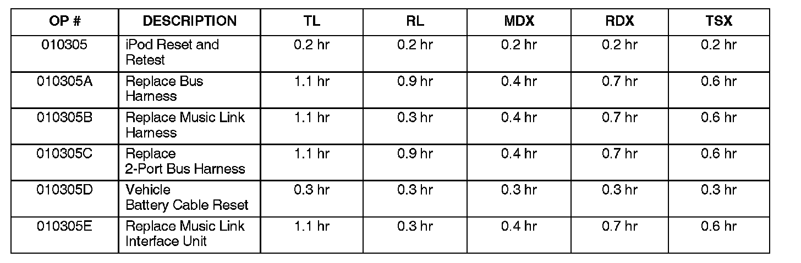

Music Link(R) - System Information/Troubleshooting: Overview
07-010February 16, 2007
Applies To:
ALL - with accessory Music Link installed
Music Link (For iPod) General Information and Symptom Troubleshooting
BACKGROUND
Acura Music Link is an Acura accessory designed to let the client play music from an Apple(R) iPod(R) through the vehicle's audio system.
The basic Music Link kit includes the Music Link interface unit, an audio unit bus cable, the Music Link harness, a CD-ROM, and the Quick Reference Guide.
The CD-ROM includes a detailed User's Guide and some optional ITS (text-to-speech) software that lets the client play music by playlist, artist, album, or genre.
^ The CD-ROM is for home computer use only. Do not insert it into a vehicle CD player.
^ Quick Reference Guides, User's Guides, and the latest TTS software versions can be downloaded from http://musiclink.acura.com.
^ For client assistance and questions regarding TTS software loading, have the client contact Acura Client Services.
The GENERAL INFORMATION section of this service bulletin covers these subjects:
^ Music Link iPod Information Resources
^ Resources for Installation Instructions
^ Music Link First-use Information
^ iPod Reset Procedure Information
The TROUBLESHOOTING section includes troubleshooting for these symptoms:
^ Check mark is not shown on the iPod display screen, radio will not switch to CD-C or CD-4 mode.
^ Static, or weak or no volume over speakers only in Music Link mode.
^ Music Link has no sound, check mark is shown on the iPod display screen.
^ Music Link has no sound, the disc number and track number flashes on the audio display.
^ Check mark is shown on the iPod display screen, radio will not switch to CD-C or CD-4 mode.
^ iPod music and XM radio music play at the same time (TSX).
^ Music Link will not do Disc 1-4 search functions.
^ Artist is not categorized in the correct grouping when using (Disc 2) search function.
^ Song/artist is not categorized in the correct grouping when using Disc 1-4 search functions.
PARTS INFORMATION
Bus Harness: P/N 08A28-1H1-10030
Music Link Harness: P/N O8A28-1H1-10031
2-Port Bus Harness: P/N 08A31-0F1-000
Music Link Interface Unit: P/N 08-8-1H1-10101

WARRANTY CLAIM INFORMATION
In warranty:
The normal warranty applies.
FLAT RATE TIMES
Failed Part: P/N 08~8-1H1-10031
Defect Code: 03214
Symptom Code: 01201
Skill Level: Repair Technician
Out of warranty:
Any repair performed after warranty expiration may be eligible for goodwill consideration by the District Parts and Service Manager or your Zone Office. You must request consideration, and get a decision, before starting work.

Disclaimer